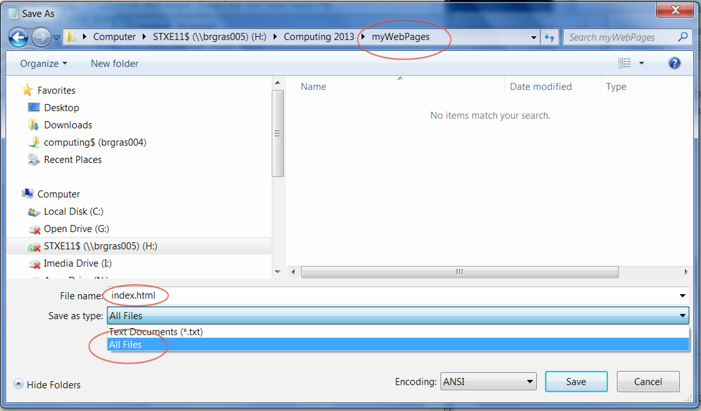

Make another new folder called it myWebPages
Double click on the new folder to go inside it.
Type index.html as the file name and in the Save as type, choose All files. Click Save. See image below for clues.
